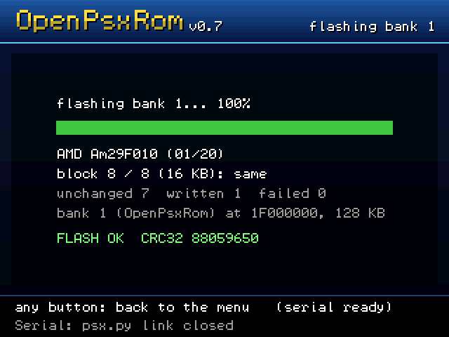

Building and installing
Building
Requirements: a mipsel-none-elf GCC toolchain and Python 3.
make TOOLS=/path/to/mipsel-none-elf- # build/openrom.rom (cartridge image, 128 KB)
make lo TOOLS=... # build/openrom_lo.exe (the menu as a RAM EXE)
make disc TOOLS=... # release/openrom.bin/.cue (boot disc with installer)
TOOLS is the toolchain prefix (default ../tools/gcc/bin/mipsel-none-elf-; just
mipsel-none-elf- if it is on the PATH).
The build compiles the resident core (core/) into a blob, links the ROM image (rom.ld:
header and ROM-executed code at 1F000000h, the rest linked for 801A0000h), compresses the RAM part
with tools/packrom.py and pads the image to 128 KB with tools/pad.py, which refuses an
image larger than 64 KB.
Flashing
From a running OpenPsxRom or Unirom (Unirom must not be in debug mode):
nops /rom build/openrom.rom /dest COMx
or with OpenPsxRom’s own client, which only sends the parts that changed (see Serial protocol):
python tools/psx.py flash build/openrom.rom


The image is checked (Sony header, checksum), written page by page and verified. The flash screen
then stays on, with the bar, the blocks unchanged / written / failed and a FLASH OK (or
FLASH FAILED) line, until a button is pressed: meanwhile the serial port is still served, so
another flash can follow straight away (the new result replaces the shown one), and a /ping or
any other command leaves the screen as it is. Keep a dump of your original firmware first:
nops /dump 0x1F000000 0x40000 backup.bin /dest COMx
Installing a second firmware
/rom looks at the image: a pre-boot entry in 1F020000h-1F03FFFFh with Unirom’s ROM2
marker at 200h goes to bank 2, an entry in 1F040000h-1F05FFFFh goes to bank 3 (only if a second
chip answers there), anything else to bank 1. OpenPsxRom itself is never touched by a bank 2/3
write. Then choose Boot options > Switch OFF at power-on.
Recovering a cartridge that does not boot
Start the console from the Unirom (or OpenPsxRom) boot disc without the cartridge, insert the
cartridge, then run nops /rom. If the console stops answering after running other software that
pokes the expansion port, power it off and on: a reset does not reset the cartridge’s logic.
Running from RAM
build/openrom_lo.exe is the same menu loaded at 80010000h. Uploaded with nops /exe it runs
without touching the flash: handy to try a new version, or to flash a cartridge from Unirom
(/exe then /rom). It cannot replace itself (it would overwrite its own code): reset first.